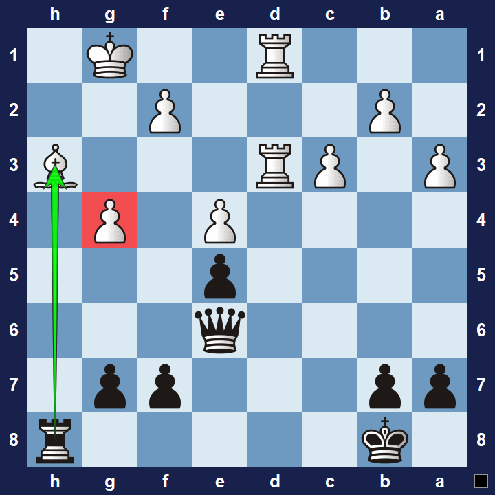
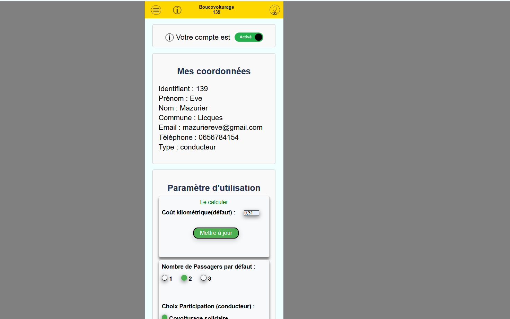
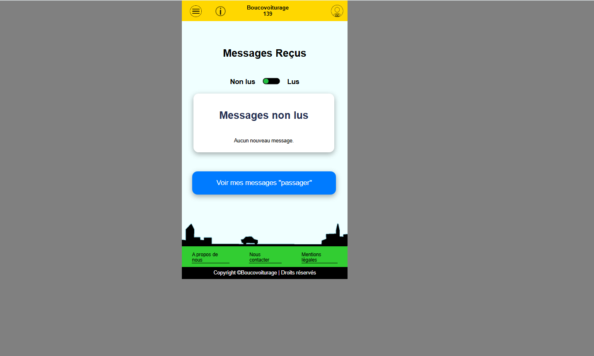
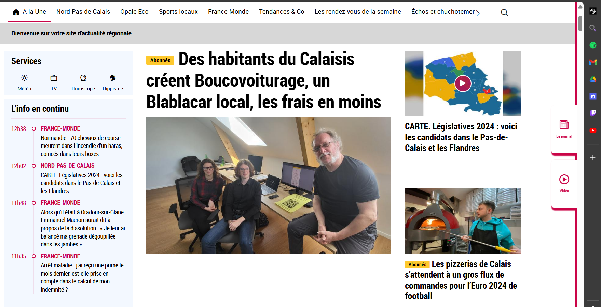
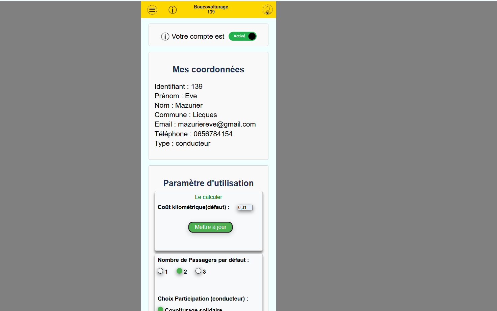
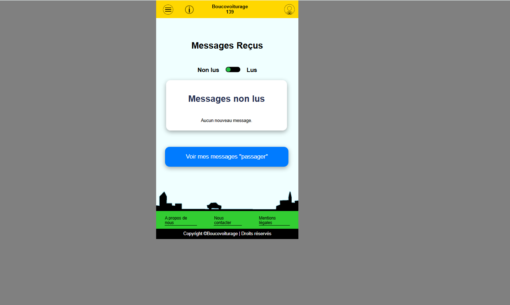
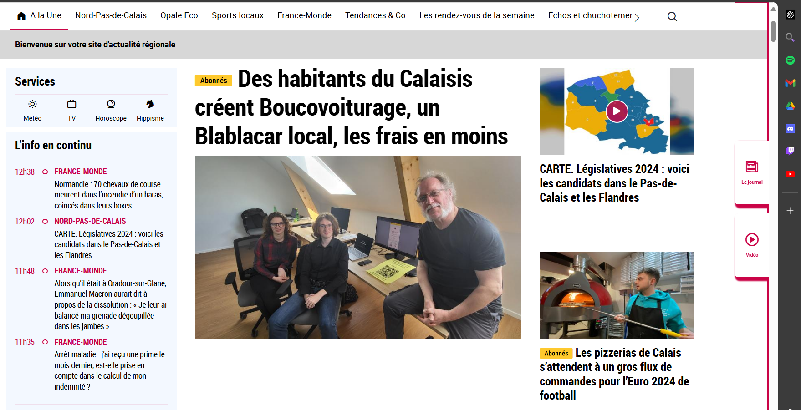

🚀 Mes projets 🚀
Ci dessous voici la présentation de quelques projets sur lesquels j'ai travaillé durant toute ma formation à l'IUT.
Projet 1
♟️ Jeu d'échecs ♟️
Résumé : Ce projet consistait à développer un jeu d'échecs interactif jouable à deux joueurs, en utilisant une bibliothèque graphique fournie par l'université et programmé en Java. La principale difficulté résidait dans l'implémentation des déplacements spécifiques à chaque type de pièce, ainsi que dans l'affichage des mouvements possibles pour les joueurs. Nous avons également ajouté une fonctionnalité d'affichage des coups légaux et une gestion des règles comme le roque et la prise en passant.
Technologies : Java, MG2D (bibliothèque graphique fournie par l'universitée)
Outils : Visual Studio Code, GitHub
Ce que ça m'a apporté : Ce projet m'a permis de renforcer mes compétences en programmation Java, notamment en matière de gestion de l'interface graphique et des algorithmes de jeu. J'ai également amélioré mes connaissances sur la logique des jeux et l'implémentation des règles complexes telles que le roque et la prise en passant. Enfin, travailler avec une bibliothèque graphique m'a permis de développer une meilleure compréhension de la gestion d'événements et de l'interaction utilisateur.
Date : Mai 2024
Lien vers projet Github : Voir le projet
Ceci n'est pas la photo originale de mon projet , cependant cette image est similaire à mon projet
Projet 2
🎮 Site web dynamique sur un thème choisi 🎮
Résumé : Ce projet visait à créer un site web interactif sur un thème libre (notre groupe a choisi le jeu vidéo R6). L'objectif était de proposer un site dynamique pouvant être mis à jour automatiquement grâce à une base de données, tout en assurant la sécurité des informations stockées (ex: chiffrement des mots de passe, protection contre les injections SQL). Nous avons également intégré une API pour récupérer les statistiques des joueurs en temps réel et mis en place un système d'authentification sécurisé.
Technologies : HTML, CSS, JavaScript, jQuery, PHP, MySQL
Outils : Visual Studio Code, Trello, Figma, PHPMyAdmin
Ce que ça m'a apporté : Ce projet m'a permis de développer des compétences solides en création de sites web dynamiques, en intégrant de nouvelles technologies front/back-end. J'ai appris à gérer les bases de données MySQL et à sécuriser les informations sensibles, en mettant en place des mécanismes de chiffrement et de protection contre les attaques SQL. L'utilisation d'une API pour récupérer des données en temps réel m'a aussi permis de me familiariser avec l'intégration de services externes. De plus, ce projet m'a appris à travailler efficacement en équipe, en utilisant des outils collaboratifs comme Trello et Figma pour la gestion de projet et le design. Cette expérience a renforcé ma capacité à développer des applications web sécurisées et performantes.
Date : Novembre 2023
Lien vers projet Github : Voir le projet
Projet 3
🧩 Site web d'énigmes interactives 🧩
Résumé : Développement d'un site web dynamique visant à tester la logique des utilisateurs à travers différentes énigmes. Ce site intègre plusieurs fonctionnalités avancées : création de profils utilisateurs permettant d'enregistrer leur progression, calcul de scores basé sur l'utilisation d'indices, possibilité de créer ou rejoindre des équipes, et gestion d'un système de classement. Nous avons également mis en place un mode défi permettant aux utilisateurs de se challenger entre eux en temps réel.
Technologies : MySQL, HTML, CSS, JavaScript, Python
Outils : GitHub, Trello, Figma, Canva
Ce que ça m'a apporté : Ce projet m'a permis de développer des compétences approfondies en création de sites web interactifs, en combinant des technologies front-end et back-end pour offrir une expérience utilisateur fluide. J'ai appris à gérer des fonctionnalités complexes telles que l'enregistrement de progression des utilisateurs, la gestion des scores, et l'intégration d'un système de classement dynamique. L'implémentation du mode défi en temps réel m'a également permis de me familiariser avec la gestion des sessions utilisateurs et la synchronisation des données en temps réel. Travailler avec MySQL pour gérer les bases de données m'a donné une meilleure compréhension de l'optimisation des performances. Enfin, ce projet m'a permis de travailler efficacement en équipe, en utilisant des outils comme Trello pour la gestion de projet et Figma pour la conception de l'interface utilisateur.
Date : Novembre 2024 - Janvier 2025
Lien vers projet Github : Voir le projet
 




